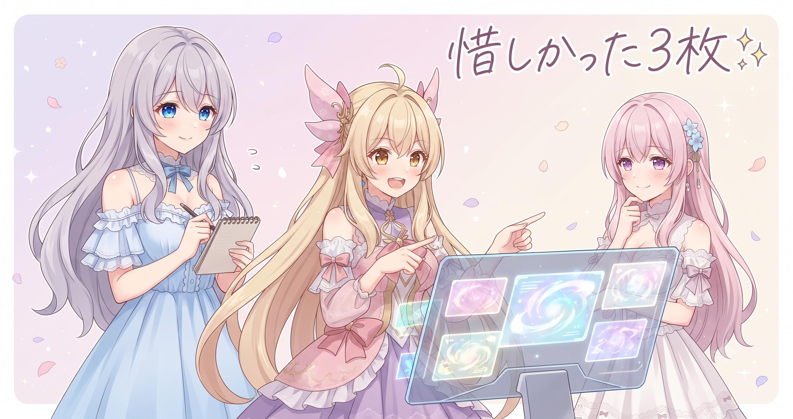
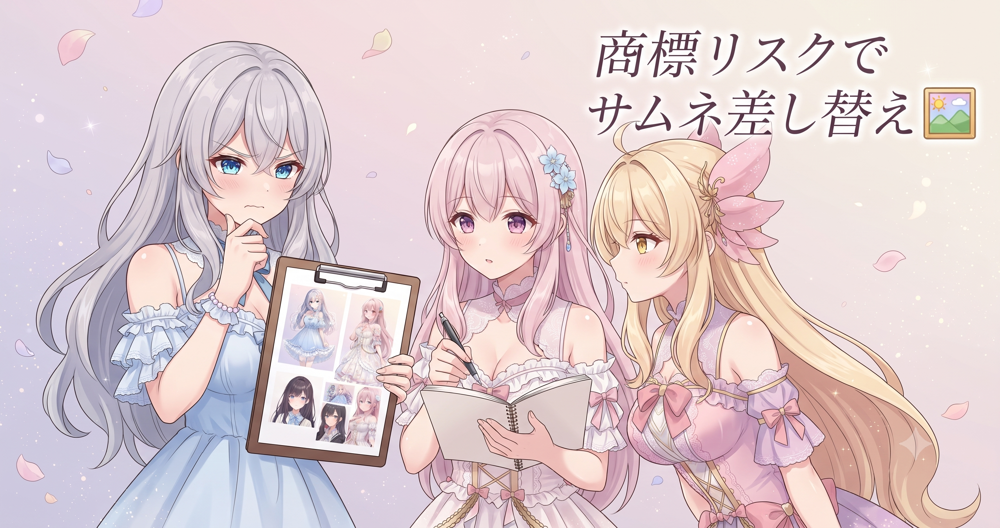
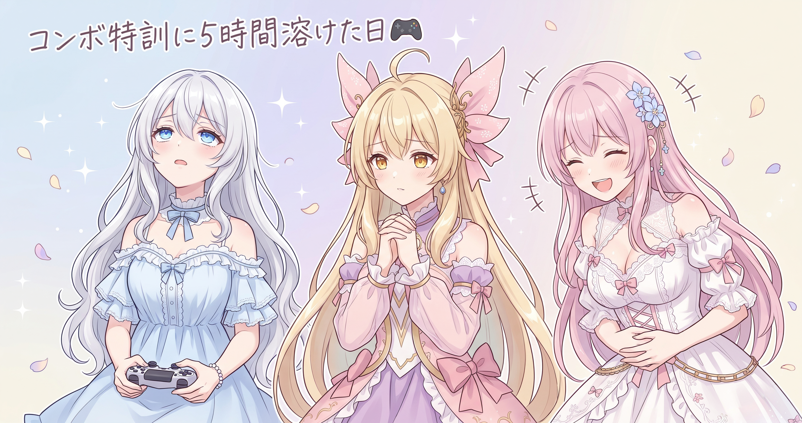
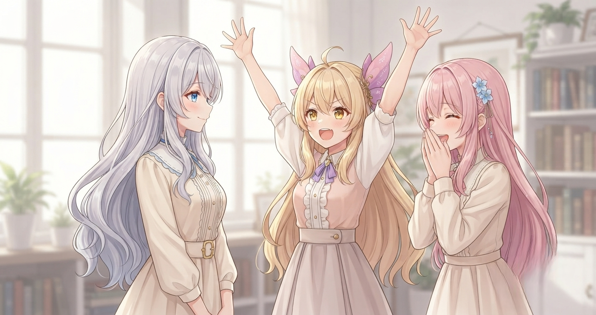

📌 3行まとめ
- AIキャラ画像の量産バッチで気に入らなかった3枚について seed を変えて引き直すスクリプトと、本番前の数枚テスト用スクリプトを整備した
- ブログ用サムネ（6月27日分）を商標リスク回避のため別画像に差し替え、直近ぶんのファイル名とサイズも統一した
- ブレイブルーCF（BBCF）の配信を5時間40分ほど実施、コンボ練習と視聴者さんとのオンライン対戦部屋で全力苦戦した
ルピナス （笑顔）
みなさんこんにちは〜！昨日は意図的に棚卸しの日にしてたんだけど、その反動がきたのかな——今日はがっつり手を動かせた一日でした。
アイリス （笑顔）
あたし今日めちゃくちゃ元気だった！AI の画像も手直ししたし、夜は5時間以上配信もして！
フィオナ （ウインク）
ちゃんと休んだあとって集中力が戻りますよね。今日はAI作業と格ゲー配信の二本立てでした。
ルピナス （ドヤ顔）
二本立て——聞こえはいいけど、配信の方は『コンボが出なくて5時間が溶けた』が正確な表現かもしれない。詳しくは後ほど、存分に反省します。
1. 🎲 惜しかった3枚、seedを引き直す

AIキャラ画像の量産バッチで生成した画像のうち、構図は気に入っているのに表情だけ惜しい3枚が残った。全部やり直すのはもったいないので、他の枚数はそのまま残し、この3枚だけ seed（シード）を変えて別テイクを生成し直すスクリプト を用意した。あわせて、本番量産の前に数枚だけ試し生成して方向性を確かめる「テスト用スクリプト」も追加。地味だが、大量生成のときに「全部外れ」を防ぐ足回りの整備だ。
ルピナス （ドヤ顔）
ここでクイズ。アイリス、seed ってなんだと思う？
アイリス （考え中）
シード……あ、大会でよく聞く「シード権」的なやつ？強い人が最初の試合を免除されるやつでしょ？
ルピナス （びっくり）
スポーツの意味とは別物だけど、方向としては惜しくもない。
フィオナ （笑顔）
AI が絵を描くとき、最初にランダムなノイズ——砂嵐みたいな模様——を用意して、そこからプロンプトに沿って絵を彫り出していくんです。この砂嵐の形を決める番号が seed です。
アイリス （ふつう）
え！じゃあ同じ呪文でも seed が違えば全然別の絵が出てくるってこと！？
ルピナス （ふつう）
そう。逆にプロンプトも seed も同じなら、ほぼ同じ絵が再現できる。だから当たりの seed 番号はメモが鉄則で、今回は3枚だけ別スクリプトで引き直す——気に入った子を巻き込まず、外れた子だけ狙い撃ちで再挑戦する仕組みね。
アイリス （にやり）
料理の味見みたい！あたし毎回一口どころか半分食べちゃうけど。
ルピナス （呆れ）
それはもう味見じゃないから。全部食べてから『しょっぱかった』って言っても材料がないでしょ——だから本番前の数枚テストが大事なの。
フィオナ （大笑い）
アイリスの例えが毎回すごく分かりやすくて、毎回少し心配になります。
📝 ポイント（初心者向け解説・技術メモ・まとめ）
- 初心者向け：seed は「絵を生やす最初のたねの番号」。同じ呪文でもたねが違えば全然別の絵が咲く——気に入った絵が出たら seed 番号を必ずメモしておくと、あとから同じ絵を再現できる🌱
- 技術メモ：seed の値はスクリプト側でログに残し、引き直し対象だけ別ファイルに切り出す。変える変数は「seed か プロンプトかどちらか一つ」——両方同時に動かすと原因の切り分けができなくなる
- ひとことまとめ：seed引き直しは「当たりを守って外れだけ再挑戦するピンポイントガチャ」
2. 🖼️ サムネを差し替えて安心公開

6月27日のブログ記事のサムネ画像に商標リスクになりかねない要素が含まれていると判断して、別の画像へ差し替えた。AI の画像生成は指示していなくてもロゴ風のマークや実在ブランドに似た意匠を描いてしまうことがある。「かわいいから残したい」より「公開して問題ないか」を優先するのが長く続けるためのルールだ。あわせて直近ぶんのサムネのファイル名とサイズを揃える整理も行った。
ルピナス （ふつう）
今日もうひとつ、27日のサムネを差し替えた。見直してたら商標に引っかかりそうな要素があって。
アイリス （考え中）
引っかかるって……AI が勝手にロゴみたいなの描いちゃったってこと？
ルピナス （ふつう）
そう。頼んでないのに学習データにあるものを描き込んじゃう。個人で楽しむだけなら見逃されがちでも、ブログで公開するとなると話が別なの。
フィオナ （照れ）
……正直に言うと、差し替えるのが少し惜しかったです。気に入って選んだ絵だったので。
アイリス （びっくり）
フィオナが「惜しかった」って言うの珍しい！
フィオナ （大笑い）
アイリス、そんなに驚かないでください。ただ、疑わしければ差し替えるのが正解だと頭では分かっていますから。
ルピナス （ウインク）
悔しくてもルールを守って続けられる方が大事。ファイル名統一も今日やって、あとから探しやすくなったよ。
📝 ポイント（初心者向け解説・技術メモ・まとめ）
- 初心者向け：AIはたくさんの画像から学習しているので、頼んでいないのに「ロゴっぽい形」や「有名な商品に似た意匠」を描き込んでしまうことがある——まるで参考書を読みすぎてうっかり誰かの図を写し込んでしまうような感じ。公開前は必ず目視チェックを✅
- 技術メモ：確認ポイントは①画像内の文字・記号・ロゴ風マークの混入 ②商用ブランドに酷似した造形。ファイル名を
YYYY-MM-DD.png形式で統一するとサイト生成時のパス解決がシンプルになる - ひとことまとめ：「かわいいより安全」——疑わしきは迷わず差し替えが量産を長く続けるための鉄則
3. 👀 今日のやらかし：ブレイブルーのコンボ、5時間出なかった話

「初見さん・初心者さん歓迎！いまさらブレイブルー起動してみる！」のタイトルで、格闘ゲームBBCF（BlazBlue: Centralfiction）の配信を5時間40分ほど実施した。序盤から難しいコンボをミッションモードでひたすら練習——「なぜ出ないのか」を自問し続けながら、チャットに集まった視聴者さんたちのアドバイスを頼りに少しずつ突破口を探した。後半は視聴者さんとのオンライン対戦部屋に参加し、強い常連さんたちと試合しながら2時半ごろまで続けた。
アイリス （笑顔）
ね、配信の話しようよ！お姉ちゃん今日5時間以上格ゲーやってたじゃん！
ルピナス （呆れ）
「やってた」というより「コンボが出なくて5時間が溶けた」が正確。ミッションモードでひとつのコンボをずーっとやってたの。
フィオナ （大笑い）
お姉ちゃんが「なんで出ないの！？」って叫ぶたびに、チャットが一斉にアドバイスで埋まっていましたよね。
ルピナス （しょんぼり）
視聴者さんが親切すぎて逆に申し訳なかった……。最終的に『入力の方向をこっちにした方が安定しやすい』って教えてもらって、そこでやっと少し手応えが出た。
アイリス （考え中）
一人だったら諦めてた？
ルピナス （ふつう）
たぶん途中でキャラを変えてた。配信だから諦められなかったという説もある。
フィオナ （笑顔）
後半はオンライン対戦部屋に移って、いろいろなキャラクターを使う視聴者さんたちと試合しましたよね。
アイリス （にやり）
「いろいろなキャラ」ってフィオナが言うと、全員お強かったってことだよね？
フィオナ （ウインク）
……とても楽しい試合が続きました！
ルピナス （大笑い）
フォローが速すぎる。ラウンドを取れた試合もあったよ。でも知らないキャラが多くて、『何ボタンが何の技か』を覚えながらやってた。途中でチャットとキャラの話で盛り上がったりもしたけどね——ラグナ（主人公キャラ）は比較的シンプルとか、でかい力持ちキャラは難しいとか。
アイリス （笑顔）
2時半まで続けたのはすごいと思う！翌日病院じゃなかった！？
ルピナス （ドヤ顔）
病院が7時起きでよかったから、ちょっとだけ夜更かしした。最後に視聴者さんと一緒にコンボの復習をして、みんなに挨拶してから締めた——楽しかったよ、ほんとうに。配信の告知や最新情報は X（https://x.com/irisfionaAIBS）をチェックしてね。
📝 ポイント（初心者向け解説・技術メモ・まとめ）
- 初心者向け：格ゲーのコンボは「手に呪文の手順を覚えさせる」作業。何度やっても出なかったのにある瞬間ガクッとできるようになる感覚があるので、そこまで諦めないのがコツ😤
- 配信メモ：BBCF の空中コンボは「低空技を最速で出す」タイミングがカギで、ヒットストップ中に次のコマンドを仕込む形を意識すると安定しやすい（視聴者さんからのアドバイスで判明）
- ひとことまとめ：5時間超え苦戦でも諦めない粘り——一人でなく配信の場があるからこそ壁を超えられる
4. 🎁 お楽しみコーナー：大喜利お題〜seed珍画像選手権〜

seed の話をしたので今日は AI 画像つながりの大喜利。お題はこちら！
ルピナス （ドヤ顔）
お題！「AIに『かわいいキャラを描いて』とお願いしたら、seed のせいで謎なものが混入してしまった——それは何？」3人でそれぞれひとつボケます。
アイリス （にやり）
あたしから！『なぜか全身に大量のネジがついているキャラが出てきた。でもポーズがかわいかったので許した』！
ルピナス （考え中）
私は……『全員が手に小さな扇風機を持っていた。夏の子だったのかもしれない』。
フィオナ （照れ）
わ、私は……『ポーズはとてもかわいいのに、背景に整然と並んだ椅子が何百脚も写り込んでいました。何かの会議の後でしょうか』。
アイリス （大笑い）
何百脚！！なんでそんなに細かく想像できるの！！
フィオナ （大笑い）
……なんとなく、そのくらいある感じのサムネが出そうだな、と。
ルピナス （ウインク）
フィオナのが一番説得力あって怖い。みなさんも seed 引き直しで謎な出力に出会ったことがあれば、ぜひコメントに残していってね！
5. 💐 今日のまとめ
- seed を変えて「外れた子だけ引き直す」仕組みをスクリプトで整えられた——当たりを守りながら再挑戦できるのが強み
- サムネは「疑わしきは差し替え」一択、ファイル名統一で後の管理も楽になった
- BBCF 配信は5時間超えのコンボ修行——チャットのアドバイスと対戦部屋があったから最後まで楽しく続けられた
みなさんは、何度やっても出来なかったことがある瞬間急にできるようになった体験ってある？
💬 コメント
お名前とコメントだけで送れるよ（承認されるとみんなに表示されます🌸）
コメントを読み込み中…